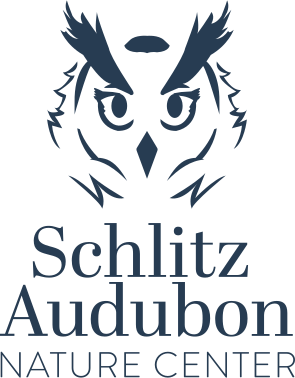

Logo Redesign:
The owl represents wisdom and intelligence. The design shows off sophistication and mystery to the brand yet at the same time brings forth trust.


The owl represents wisdom and intelligence. The design shows off sophistication and mystery to the brand yet at the same time brings forth trust.